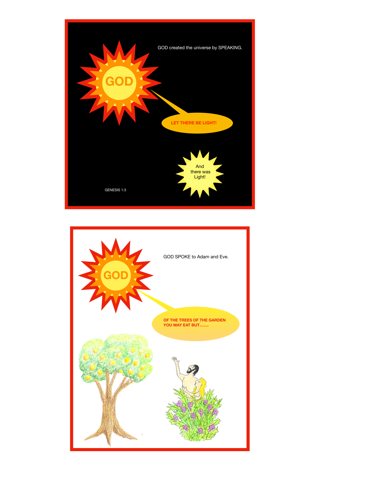
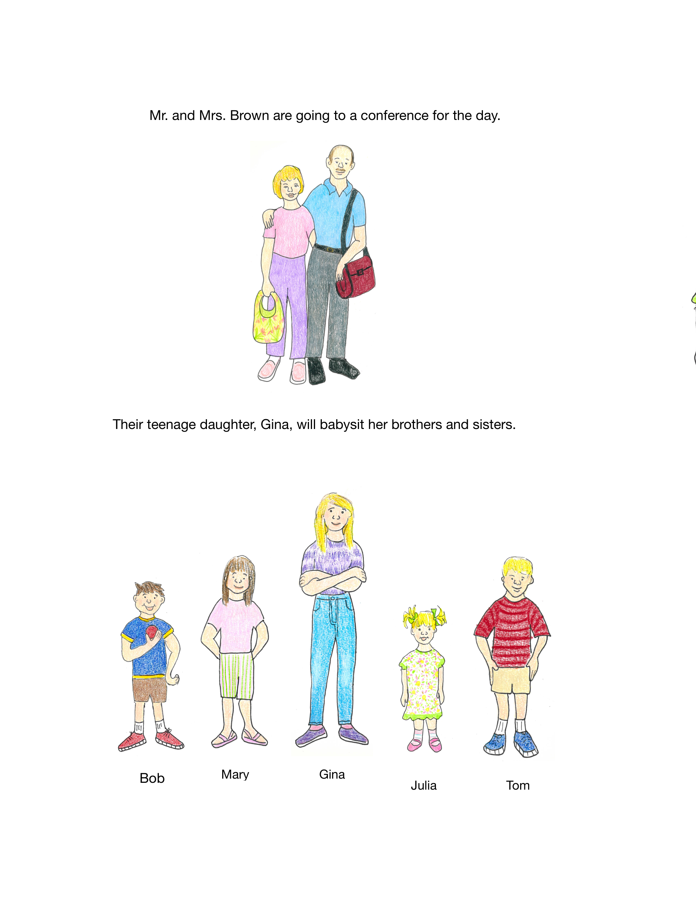
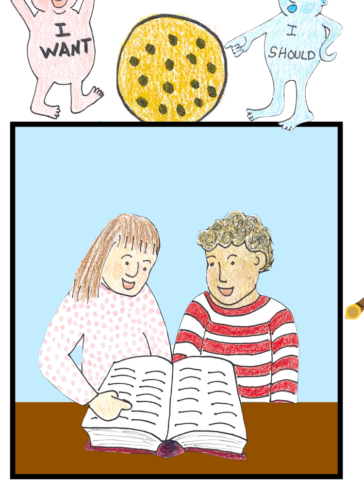
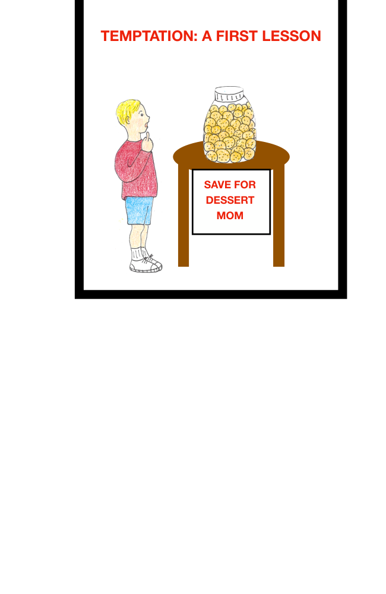
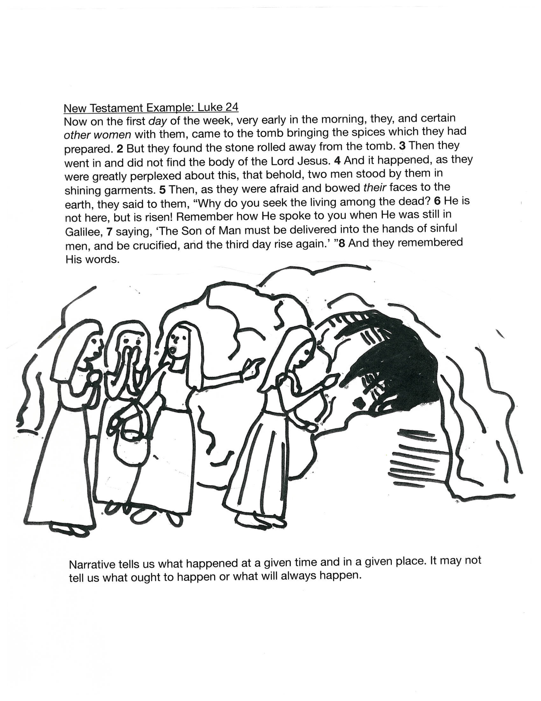
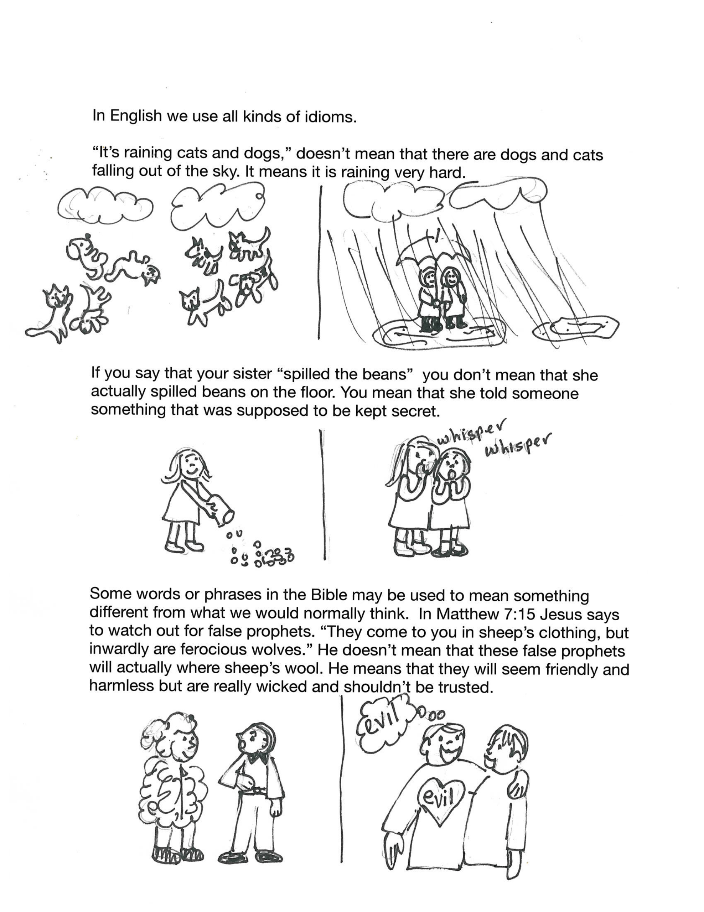
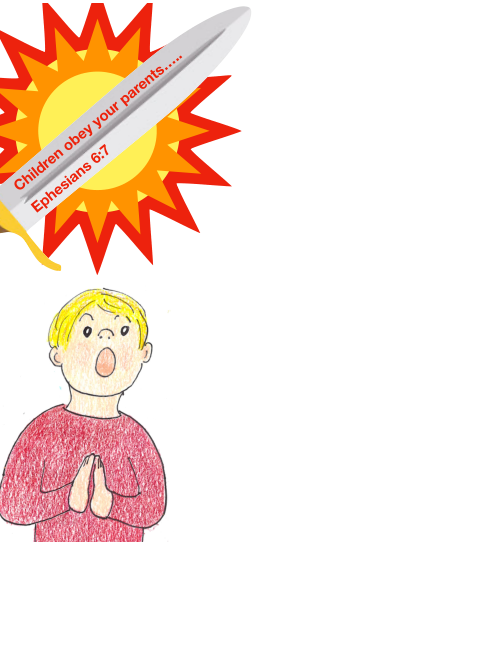

Books
Books and sample pages that invite children to look closely.
Karen's planning notes imagined a media page that was simple: show the books, show a few sample pages, and let the work speak. This page keeps that spirit.


Featured collection
The Wise Child and the Word of God
The chapter samples move from God's word, to context, to the meaning of words, to genre. The tone is calm and child-friendly, but the subject is serious: children can learn to handle Scripture carefully.
Foundational book
The Wise Child Book
Karen's own story of this book is one of the strongest pieces of source material in the folder: a mother reading Proverbs, drawing what she learned, and a small son returning again and again to hear the pictures explained.
That beginning matters, because it tells visitors these books were not invented as a brand. They grew out of real teaching in a real home.
Read the preface

Short lesson
Temptation: A First Lesson
The candy drawing from Karen's homepage sketch is not just decorative. It shows one of her clearest gifts: taking an ordinary scene a child already knows and turning it into a wise conversation about sin, desire, correction, and change.
This kind of smaller book or booklet is one of the things the site should make room for, not hide behind a single grand “featured product.”
What Children Meet Inside
Examples, conversations, and images that keep moving.


